Hello! I’m a Ph.D. candidate in Electrical Engineering at Purdue University, advised by
Dr. Charles A. Bouman and
Dr. Gregery T. Buzzard. I have
8+ years of experience in computational imaging, inverse problems, and machine learning, with multiple awards at
top international conferences. My current research focuses on developing physics-informed AI algorithms for hyperspectral
neutron imaging at Oak Ridge National Laboratory. Prior to Purdue, I worked at Microsoft developing next-generation
camera ISP pipelines and at UNAR Labs creating computer vision solutions for assistive technologies.
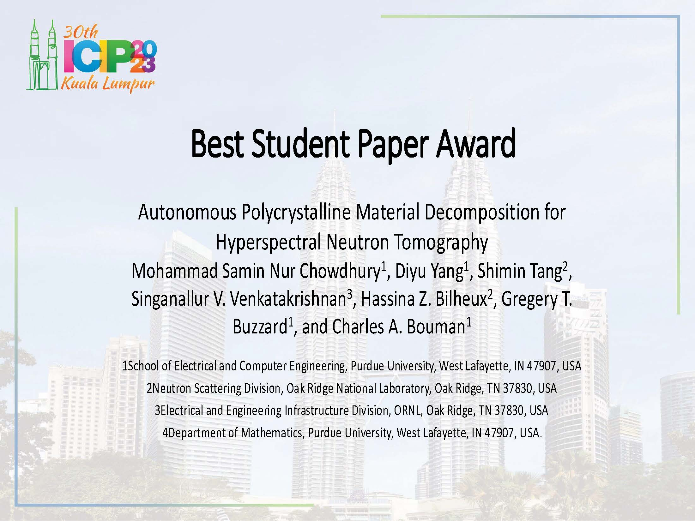
"Autonomous Polycrystalline Material Decomposition for Hyperspectral Neutron Tomography"
Best Presentation Award WCNR 2024
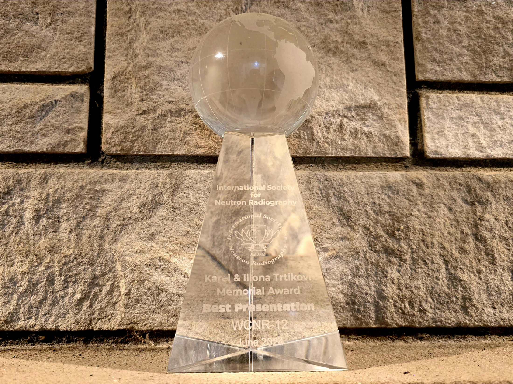
"Fast Hyperspectral Reconstruction for Neutron Computed Tomography Using Subspace Extraction"
Top 3% Paper Recognition IEEE ICASSP 2023
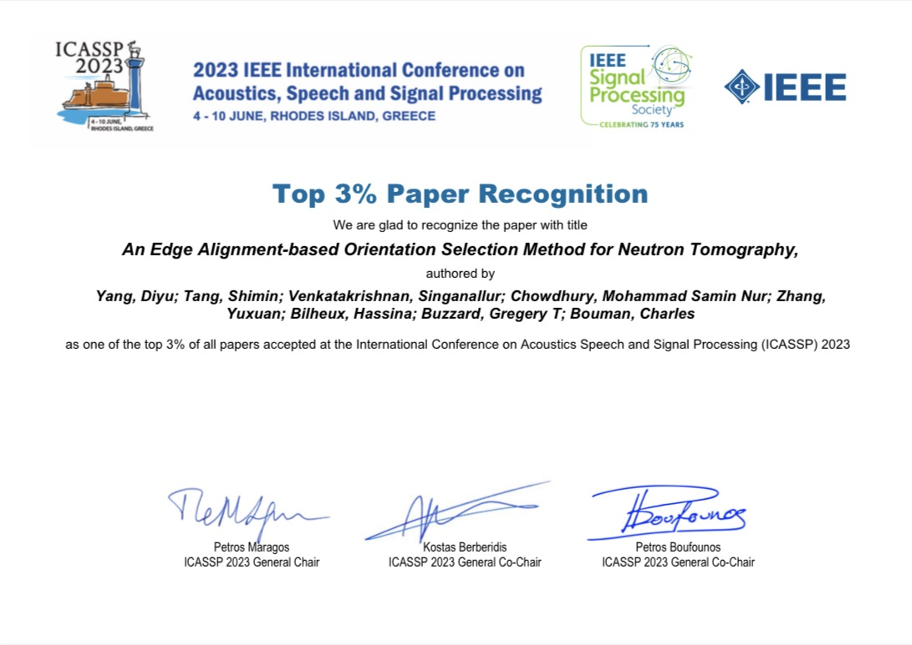
"An Edge Alignment-Based Orientation Selection Method for Neutron Tomography"
Experience
Research Assistant
Purdue University, West Lafayette, Indiana, USA | May 2021 – Present
Developed physics-informed AI algorithms for hyperspectral neutron imaging at Oak Ridge National Laboratory.
Built a scalable Python package for fast 4D hyperspectral denoising, reconstruction, and material decomposition.
Designed a robust Python package for accurate strain tensor estimation from neutron Bragg edge measurements.
Teaching Assistant
Purdue University, West Lafayette, Indiana, USA | Jan 2021 – May 2021
Led Python-based lab sessions for Digital Signal Processing with Applications.
Image Quality Engineer
Microsoft Corporation, Redmond, Washington, USA | Jul 2020 – Dec 2020
Developed camera ISP pipelines for Surface devices, optimized for diverse lighting conditions.
Designed algorithms for 3A (auto exposure, white balance, focus), low-light noise reduction, and color correction.
Developed AI models for skin-tone correction, local gamma refinement, and overexposed sky reconstruction.
Analyzed RAW sensor data, tuned color parameters, and collaborated with color science teams to optimize pipeline.
AI/ML Research Intern
UNAR Labs, Portland, Maine, USA | Summer 2020
Designed AI algorithms to convert scientific documents into accessible formats for visually impaired users.
Implemented real-time image analysis, optical character recognition (OCR), and pattern recognition techniques.
Teaching Assistant
Arizona State University, Tempe, Arizona, USA | Aug 2018 – May 2019
Conducted MATLAB and GNU Radio-based lab sessions for Communication Systems.
Research
Fast Unsupervised Machine Learning Algorithms for Hyperspectral Neutron Imaging
Purdue University & Oak Ridge National Laboratory
Neutron imaging is a non-destructive technique for analyzing the internal structure of a sample and provides
information complementary to X-ray imaging. Hyperspectral neutron imaging extends this capability by capturing
hundreds to thousands of wavelength-resolved neutron radiographs, enabling detailed spectral characterization
of the sample’s constituent materials. However, due to their massive size and extremely low signal-to-noise
ratios (SNR), hyperspectral neutron datasets are exceptionally difficult and time-consuming to analyze.
X-ray Vs. Neutron ImagingHyperspectral Neutron Data Collection
We developed a family of three fast algorithms that dramatically improve hyperspectral neutron data processing
and analysis. All three are unified under a dehydration–rehydration framework:
Dehydration: Performs unsupervised machine learning–based dimensionality
reduction, representing large hyperspectral datasets in a compact subspace—no prior training required.
Rehydration: Restores data from the subspace to the hyperspectral domain,
preserving both structural and spectral fidelity.
Fast Hyperspectral Denoising (FHD): Achieves over 30 dB SNR improvement
while preserving spectral and spatial details. Sequential dehydration and rehydration suppress spectral
noise during subspace fitting and restore clean, high-SNR hyperspectral data.
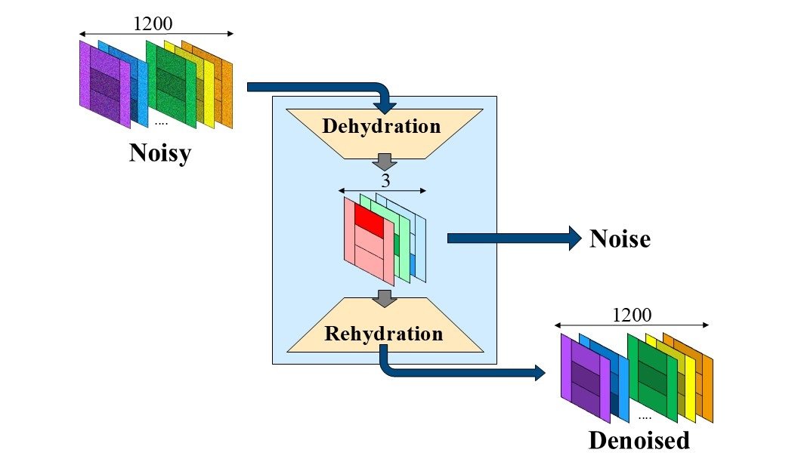
FHD AlgorithmNoisy Vs. Denoised: Spatial
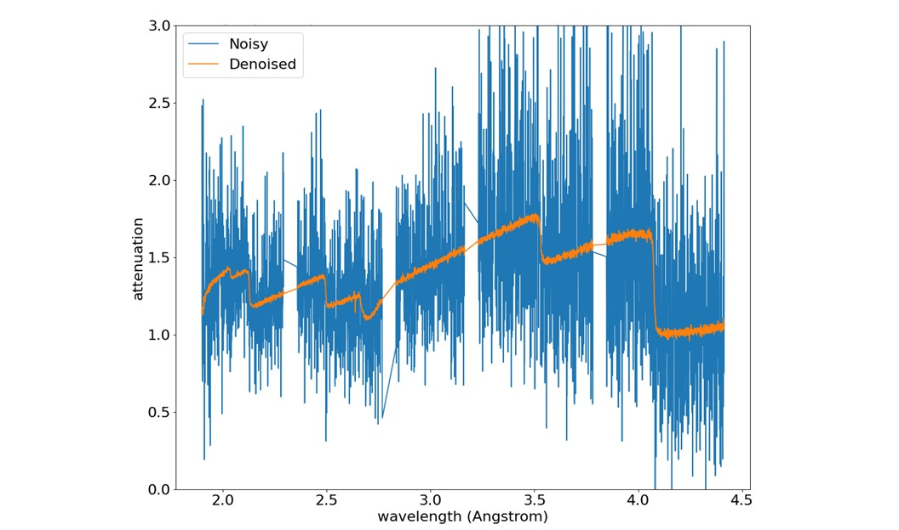
Noisy Vs. Denoised: Spectral
Fast Hyperspectral Reconstruction (FHR): Performs over 1,000 3D reconstructions
in under an hour—more than 10× faster than traditional approaches—while reducing noise and improving image
quality. Sequential dehydration, tomographic reconstruction, and rehydration enable this speed and fidelity.
This work received the Best Presentation Award at the 12th World Conference on Neutron Radiography (WCNR),
2024
[paper].
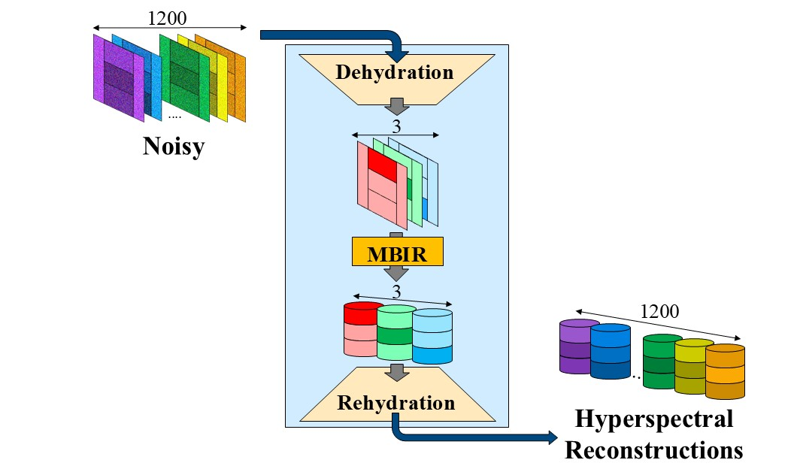
FHR Algorithm
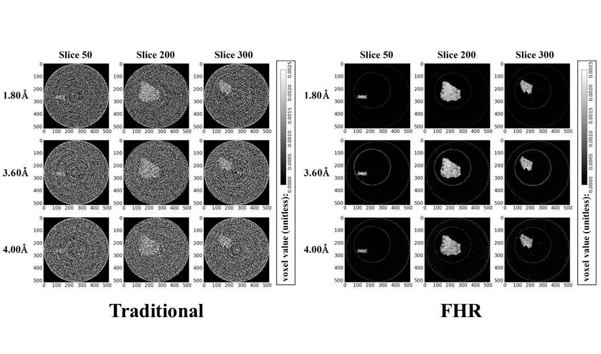
Traditional Reconstruction Vs. FHR
Fast Material Decomposition (FMD): Provides 10× faster volumetric material
separation and 25+ dB SNR improvement through sequential implementation of dehydration, tomographic reconstruction,
and subspace-to-material transformation. An earlier version earned the Best Student Paper Award at the IEEE
International Conference on Image Processing (ICIP), 2023
[paper],
and the extended version was published in IEEE Transactions on Computational Imaging (2025)
[paper].
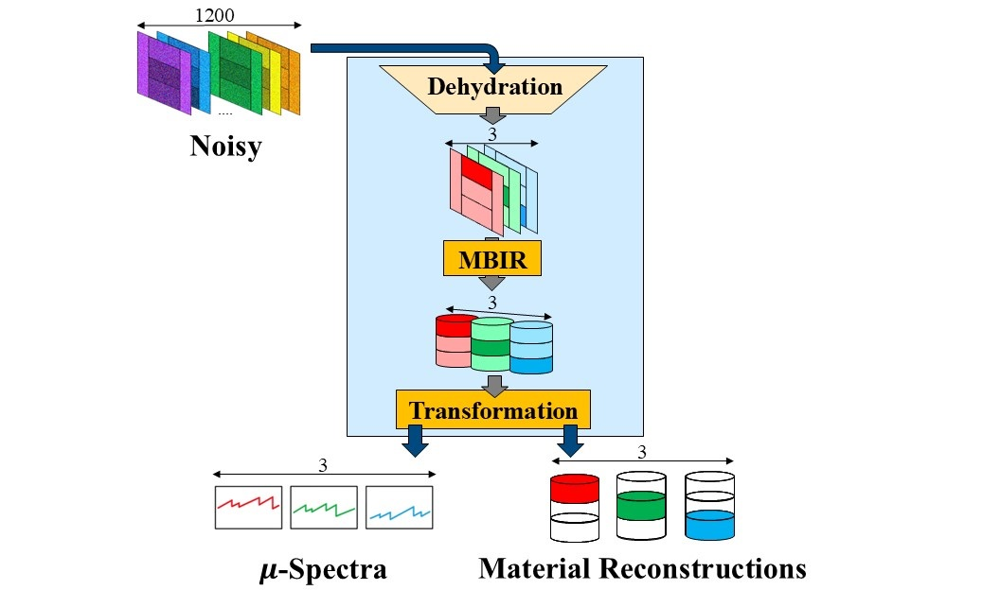
FMD AlgorithmFMD Material Separation
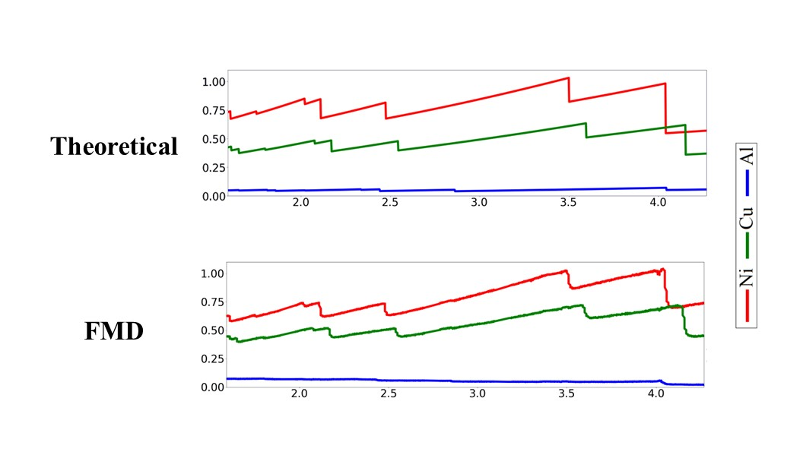
FMD Spectra Estimation
Physics-Constrained Strain Tensor Reconstruction from Neutron Bragg Edge Data
Purdue University & Oak Ridge National Laboratory
Strain tensors are fundamental for assessing a component’s structural integrity—including its strength, durability,
and long-term reliability. Neutron Bragg edge strain tomography is a non-destructive technique that reconstructs
these tensors by analyzing strain sinograms derived from Bragg-edge measurements. However, the inverse problem
associated with the reconstruction is severely ill-posed, as at each position, one must recover a tensor (with
3 components in 2D or 6 in 3D) from only a single scalar measurement.
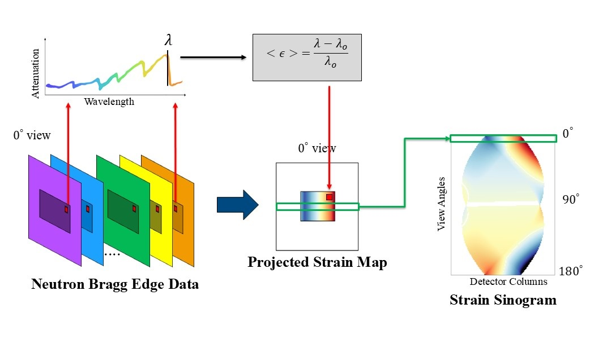
Strain Sinogram Generation
To address this challenge, we developed two novel algorithms for reconstructing 2D strain tensors, achieving
over 99% accuracy by enforcing physics-based constraints. The algorithms are:
MACE Model: A Multi-Agent Consensus Equilibrium (MACE) framework that
integrates a sinogram-domain forward model, Model-Based Iterative Reconstruction (MBIR), and physics-based
constraints to iteratively recover accurate 2D strain tensors. We call this algorithm Model-Oriented Neutron
Strain Tomographic Reconstruction (MONSTR). This work was presented at the IEEE International Conference
on Image Processing (ICIP), 2025
[paper].
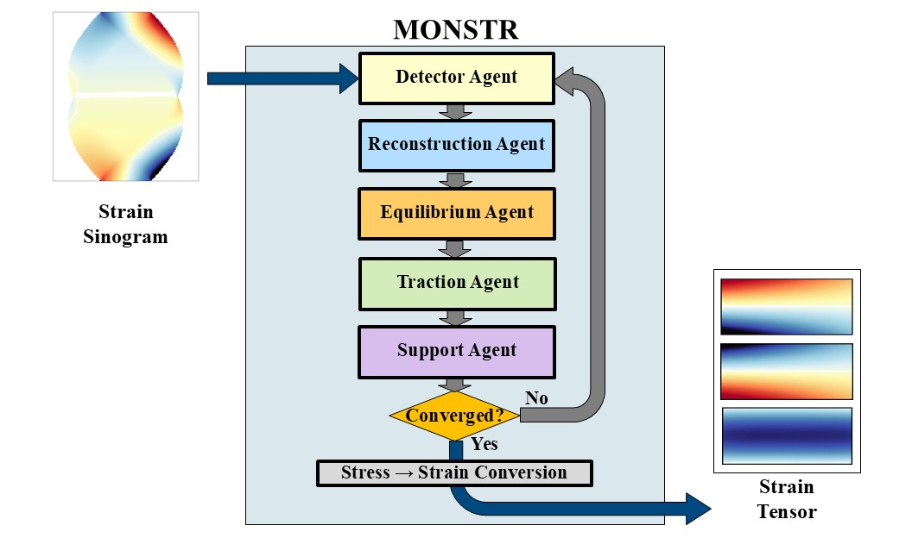
MONSTR AlgorithmSimulated Data Results
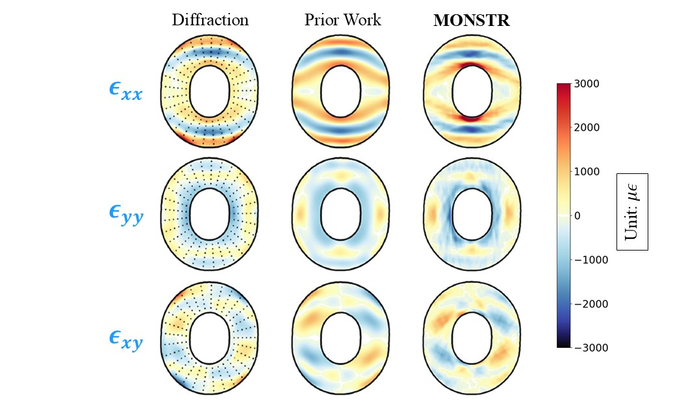
Measured Data Results
GAN Model: A generative adversarial network (GAN) where the generator reconstructs
2D strain tensors and the discriminator enforces structural realism guided by physics-based constraints.
We plan to present this work at an upcoming conference.
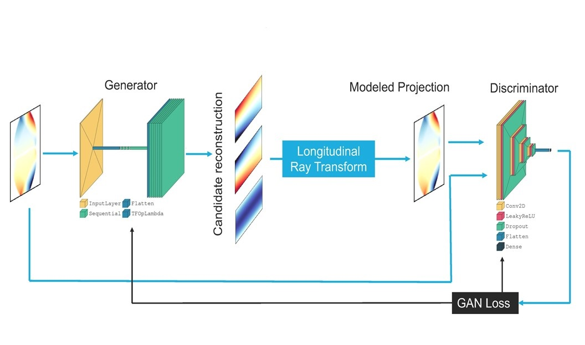
GAN-Based Algorithm
Intelligent Data Acquisition for Hyperspectral Neutron CT
Purdue University & Oak Ridge National Laboratory
Data acquisition for hyperspectral neutron CT requires substantial time and resources at the beamline. Since
beamline time is both limited and highly valuable, it is essential to maximize the information gained from each
experiment while minimizing resource consumption. Achieving this goal necessitates intelligent and autonomous
data acquisition strategies.
To address this, we developed AI-powered methods to optimize hyperspectral neutron CT data acquisition, helping
to conserve valuable beamline time and resources:
Adaptive Orientation Selection: Optimizes sample orientation selection
based on edge alignment, reducing the number of measurements required for high-quality reconstructions.
When applied to simulated and measured data, it significantly outperformed traditional golden-ratio-based
view selection. This work received the Top 3% Contribution Award at the IEEE International Conference on
Acoustics, Speech, and Signal Processing (ICASSP), 2023
[paper].
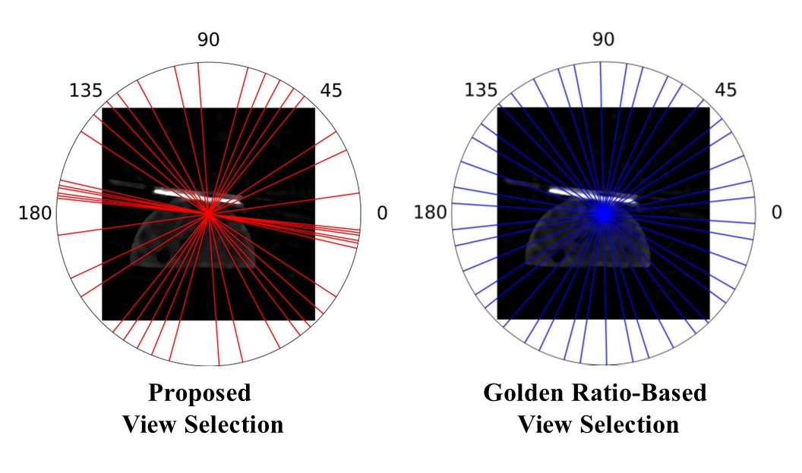
Proposed Vs. Golden Ratio-Based View SelectionNormalized Root Mean Square Error (NRMSE) Between Reconstruction and Ground Truth
Machine Learning Decision Criterion: Reduced hyperspectral data collection
time by 5× at ORNL by combining advanced reconstruction algorithms with a machine learning–based protocol
that terminates experiments once sufficient information is acquired. This work was published in Scientific
Reports by Nature (2024)
[paper].
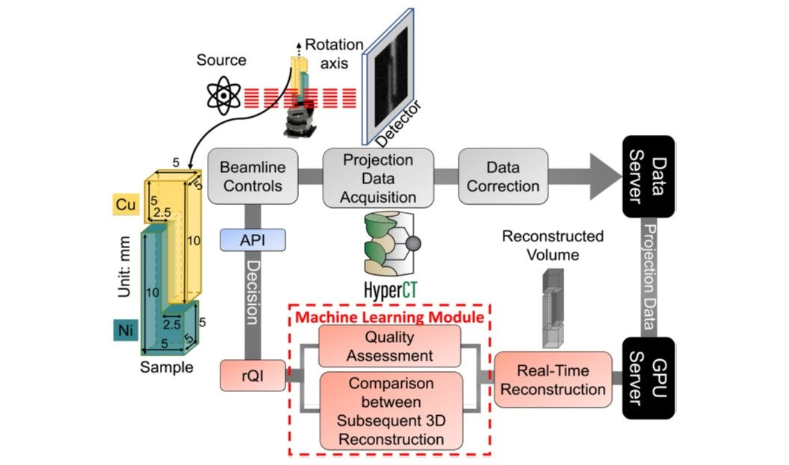
ORNL HyperCT Workflow
Fast Large-Scale Model-Based Iterative Reconstruction (MBIR) Using Vision Transformer
Purdue University & Oak Ridge National Laboratory
With increasing detector sizes, the amount of data for CT reconstruction is also growing. While Model-Based
Iterative Reconstruction (MBIR) produces high-quality results, it becomes extremely time-consuming for large-scale
datasets. To achieve fast and reliable reconstructions, we proposed the following pipeline:
1. Downsample projection/sinogram data. 2. Perform MBIR on the downsampled data. 3. Upsample the reconstruction using a Transformer-based super-resolution
network (SwinIR). 4. Refine the reconstruction with a few iterations of MBIR on the original
data.
This framework achieved close to 3x faster reconstruction while maintaining high-quality results.
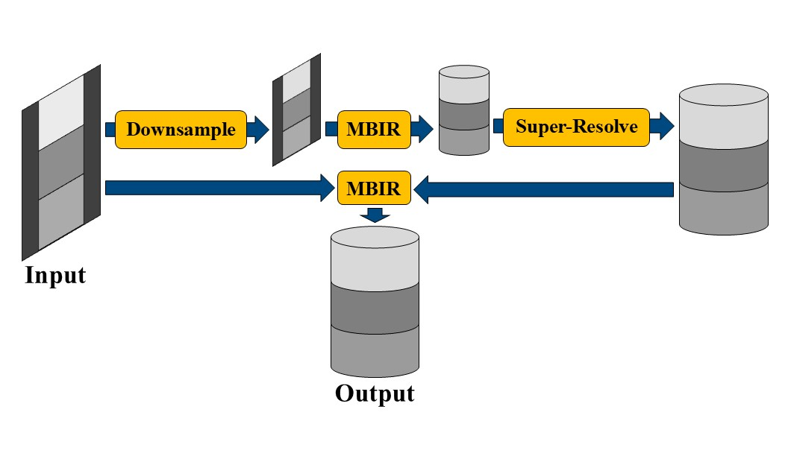
Reconstruction Pipeline
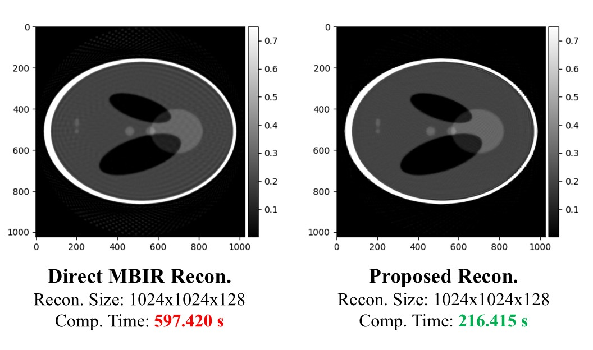
Direct MBIR Vs. Proposed Recon.
Plug-and-Play Framework with a Diffusion Prior for High-Quality Reconstruction
Purdue University & Oak Ridge National Laboratory
We developed a plug-and-play CT reconstruction framework that integrates the standard forward model with a
diffusion-based prior (DiffUNet). This approach improved reconstruction SNR by over 15 dB compared to traditional
method.
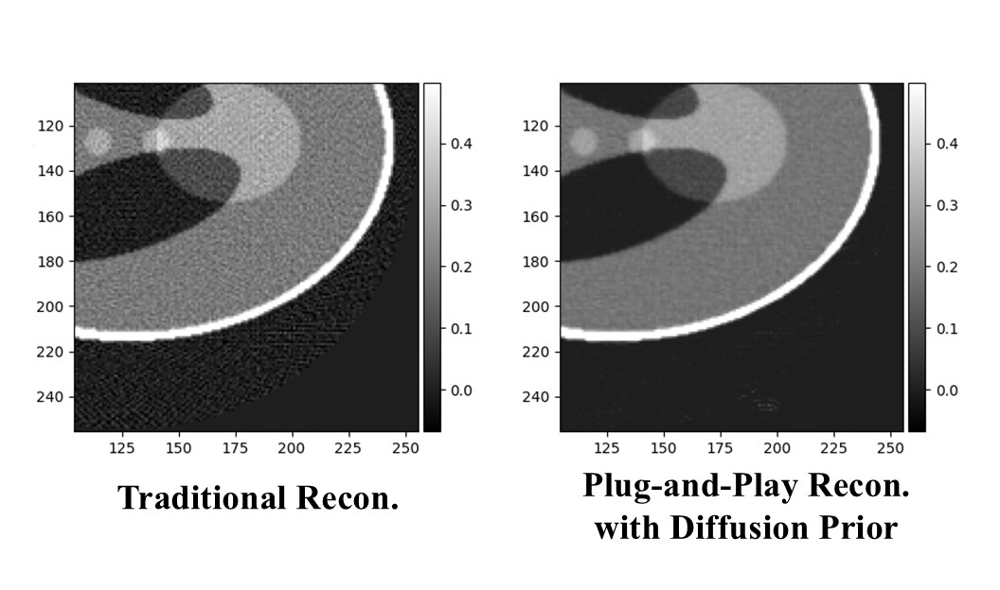
Traditional Vs. Diffusion-based PnP Recon.
Multi-Pose Fusion for Material Decomposition in Hyperspectral Neutron Tomography
Purdue University & Oak Ridge National Laboratory
We previously proposed a fast material decomposition algorithm capable of volumetrically separating materials
in a sample using hyperspectral neutron CT data from a single pose. However, for objects with complex geometries
or heterogeneous compositions, relying on a single-pose dataset can lead to inaccurate material decomposition.
To overcome this limitation, we developed a multi-pose fusion algorithm that integrates data acquired from multiple
sample poses—i.e., distinct tilt configurations—within a Multi-Agent Consensus Equilibrium (MACE) framework,
enabling highly accurate and robust material decomposition. This work was presented at the Asilomar Conference
on Signals, Systems, and Computers, 2024
[paper].
AI-Enhanced Sparse-View Reconstruction for ToF Neutron Imaging
Purdue University & Oak Ridge National Laboratory
Since hyperspectral neutron data collection is extremely time-consuming, it is often impractical to acquire
measurements from a wide range of views for full tomographic reconstruction. However, sparse-view reconstructions
produced by traditional methods typically suffer from severe artifacts and loss of detail.
To address this limitation, we proposed a hybrid reconstruction framework that first computes a low-quality
sparse-view reconstruction and then enhances it using a deep neural network trained on pairs of low-quality
and high-quality reconstructions of the same samples. This hybrid method yields significantly improved reconstructions
over conventional sparse-view techniques. The work was presented at the 12th World Conference on Neutron
Radiography (WCNR), 2024
[paper].
Proposed Algorithm
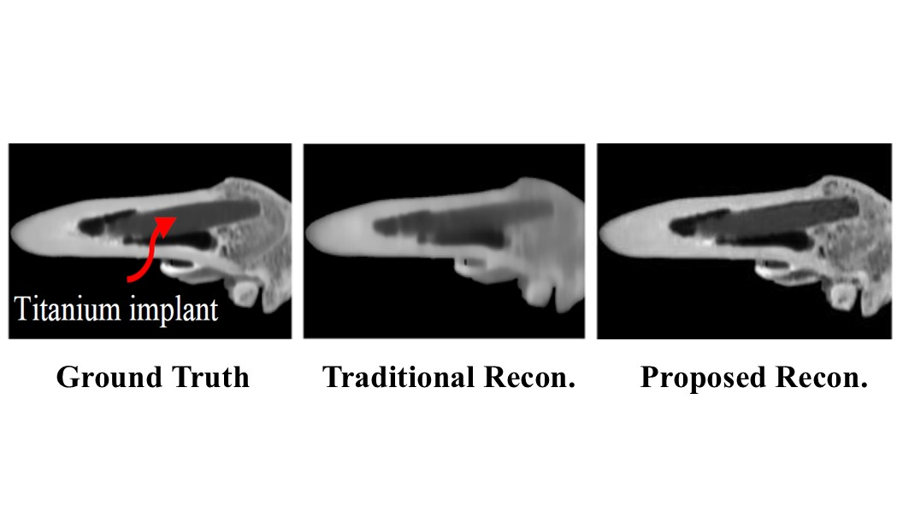
Reconstruction Results
Reaction Time Estimation from Multi-Channel EEG
Arizona State University
Human behavioral responses during perceptual decision-making are closely related to the brain’s electrical activity,
as measured by electroencephalograms (EEG). Accurately modeling this relationship and predicting human responses
directly from EEG offers powerful opportunities in psychology, clinical neuroscience, and brain–computer interface
(BCI) development.
We developed a series of machine learning and deep learning algorithms to predict human response times from
multi-channel EEG signals:
ML Models: Implemented multiple machine learning models for both classification
and regression tasks, achieving 79% accuracy in binary classification and 74% correlation in regression.
This work was presented at the International Conference of the IEEE Engineering in Medicine and Biology
Society (EMBC), 2020
[paper].
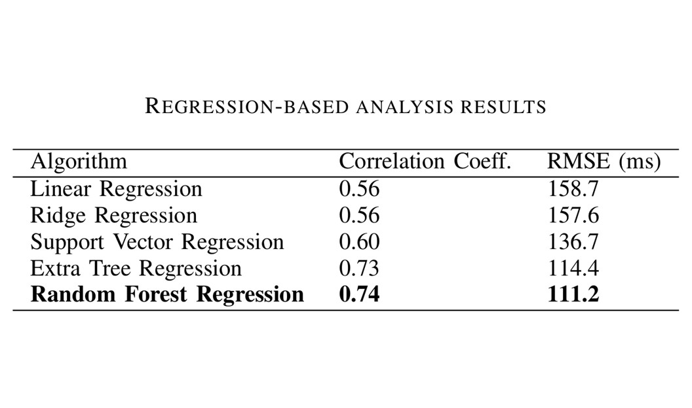
Regression Performance Comparison Among Machine Learning Models
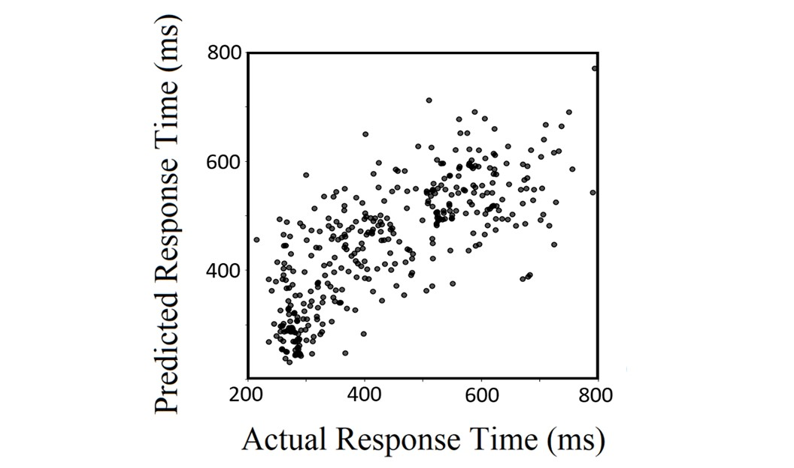
Actual Vs. Predicted Response Time for Random Forest Model
CNN + Random Forest: Achieved 94% binary classification accuracy using
a CNN model, and 80% regression correlation by combining the CNN model with a Random Forest model. This
work was published in Sensors (2020)
[paper].
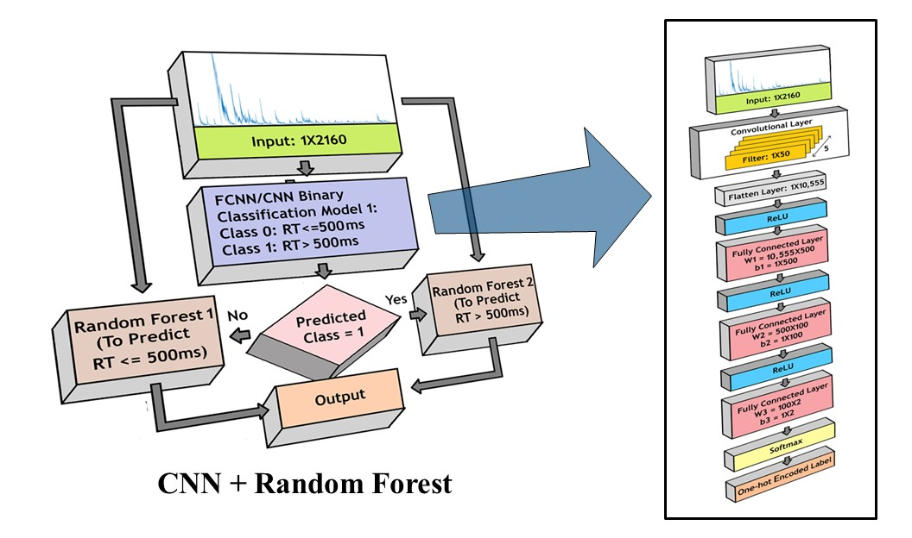
CNN + Random Forest Regression Model
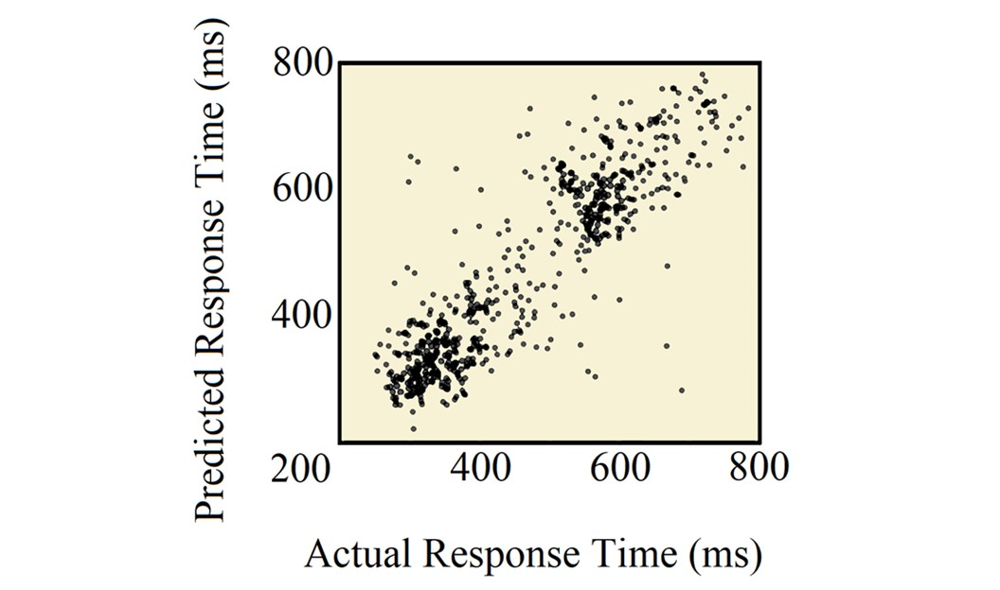
Actual Vs. Predicted Response Time
3D-CNN: Designed a 3D convolutional neural network (3D-CNN) that leverages
inter-channel spatio-temporal relationships in EEG signals, achieving 83% regression correlation. This work
was presented at the International Conference of the IEEE Engineering in Medicine and Biology Society
(EMBC), 2021
[paper].
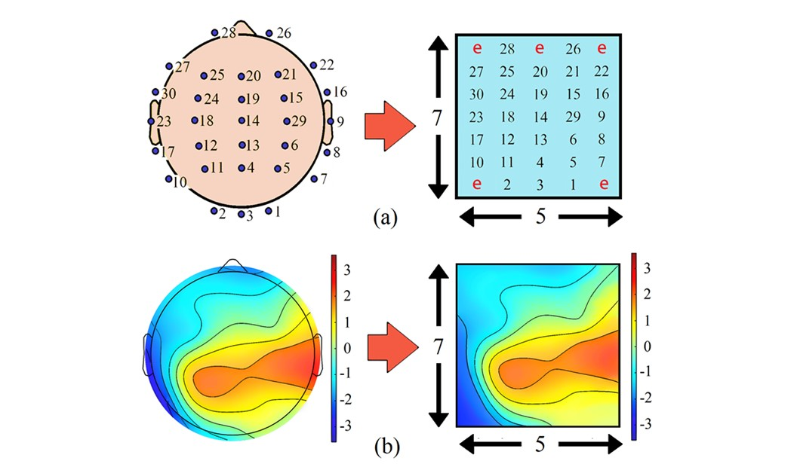
Reposition EEG Channels for 3D Input Array
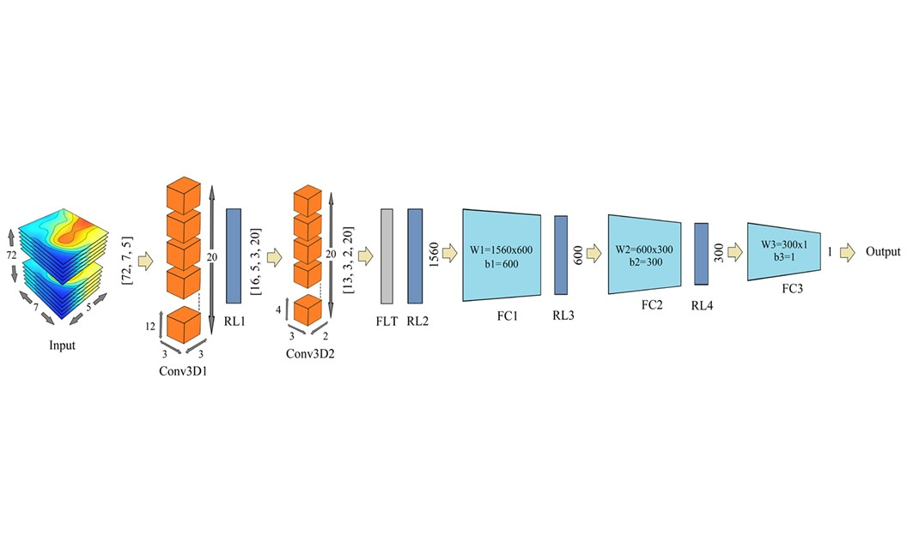
3D-CNN Model
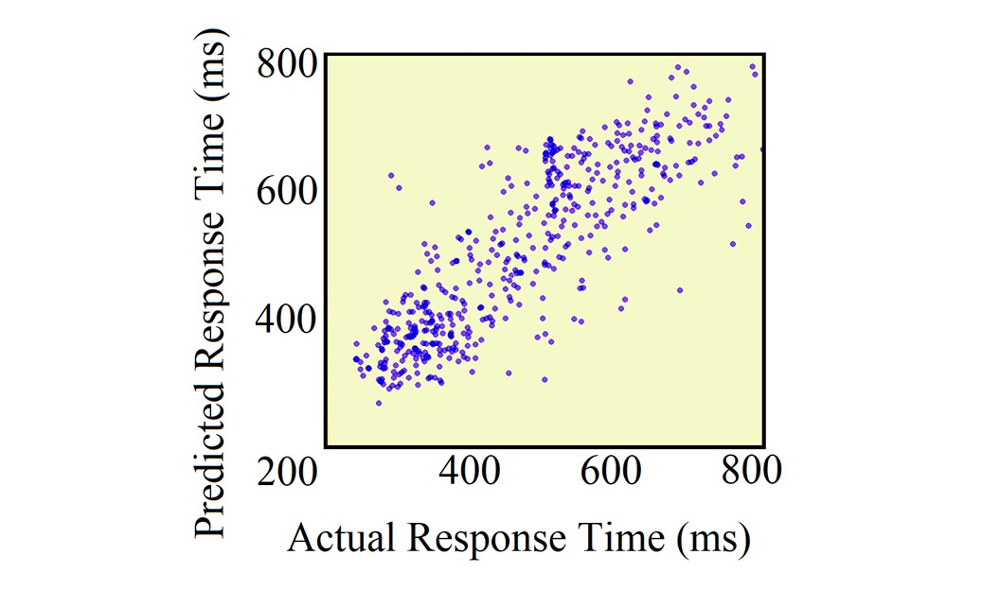
Actual Vs. Predicted Response Time
Mini Projects
YOLO-Like Network Using Anchor Box for Multi-Instance Object Detection & Localization
Designed a 44-layer convolutional neural network model which incorporates anchor boxes as data labels for
training and testing similar to the YOLO network and used it for multi-instance object detection & localization
on the COCO dataset.
Automatic Object Removal from Images with Semantic Segmentation & Generative Inpainting
Encoder-decoder-based segmentation model (base: Deeplab 3+) was used for object area isolation & generative
inpainting with contextual attention was used for the reconstruction. 82.20% mIOU was achieved for segmentation,
and 92% of the images obtained desirable reconstructions.
Image Classification Combining Fine-Tuned Alexnet & Support Vector Machine (SVM)
Replacing the last few layers of a fine-tuned Alexnet by SVM, a classifier was constructed. 75% accuracy was
obtained for the “Places” image-set (9 classes) after dataset augmentation.
Camera-Based Android App for Automatic Noise Reduction, Edge/Sharpness Enhancement, Color & Tone Correction,
and Advanced Image Filtering
Was recognized as one of the best projects (with 98% marks) in class.
Motion Estimation Using FAST & AGAST Detectors, FREAK Descriptor & Optical Flow
For a test video of cars on the road, 90% accurate estimation of motion was achieved for Optical Flow (Lucas-Kanade)
method and 78% for FREAK descriptor.
Text-Based Spam Email Detection & Newsgroups Classification Using Recurrent Neural Network (RNN)
97.3% & 86.9% of accuracy were achieved for spam and newsgroups, respectively.
A Machine Learning Decision Criterion for Reducing Scan Time for Hyperspectral Neutron
Computed Tomography Systems
S. Tang, S. V. Venkatakrishnan, M. S. N. Chowdhury, D. Yang,
M. Gober, G. J. Nelson, M. Cekanova, A. S. Biris, G. T. Buzzard, C. A. Bouman, H. D. Skorpenske, and H. Z. Bilheux
 Microsoft Corporation, Redmond, Washington, USA | Jul 2020 – Dec 2020
Microsoft Corporation, Redmond, Washington, USA | Jul 2020 – Dec 2020